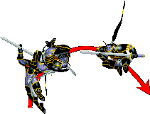
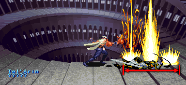

TEL'ARIN
 overture-전주곡, 서곡 (스테이지 10-2) 보스 '텔'아린' |
기본 정보
픽 포켓으로 얻을 수 있는 아이템
클리어 시간 측정의 시작 시점
텔아린의 HP가 보이는 시점 부터 최단 시간 클리어 기록
파이터 / 클레릭 4:51 |
|||||||||
드랍 가능한 아이템 - 돈 + 점수 아이템 + 그외 아이템의 구성으로 떨어진다.
돈 : 5sp x3 + 1spx3 (18sp) / 10sp x5 (50sp) / 50sp x3 (150sp) / 100sp x2 (200sp) / 500sp x1 (500sp)
기타 :  스크롤(scroll) 최대 8레벨
스크롤(scroll) 최대 8레벨
| 점수 아이템 : | |
| 반지류 : | |
| 도구류 : | |
| 완드류 : | |
| 장비류 : | |
초반에 나왔던 그 텔'아린이 4천왕 중 한명으로 다시 등장한다. 패턴 자체는 애니메이트 데드가 없어졌다는 것을 제외하면 완전히 똑같지만 대신 HP가 좀 더 많아졌다. 헤이스트를 시전할 수 있기 때문에 그냥 싸우자면 쉽지 않은 상대지만 LB오일이 아주 잘 통하는지라 역시 어렵지 않게 물리칠 수 있다.
LB오일의 존재로 인해 오히려 초반보다 더 쉽다고 느낄 수도 있다.
LB오일의 존재로 인해 오히려 초반보다 더 쉽다고 느낄 수도 있다.
시작전 대사
"하하하, 그래 결국 다시 만나게 됐군......"
이 대사가 끝난 후 바로 싸움이 시작 된다.
패턴 분석
| ※ 붉은색은 파이터가 입는 데미지, 푸른색은 매직 유저가 입는 데미지. 클레릭/드워프는 파이터에 가까운 데미지를, 시프/엘프는 매직 유저에 가까운 데미지를 입는다. ※ 금색 이름의 공격을 하는 도중에는 D키를 쓸 수 없다. |
|
| 찌르기 (23/34) | |
 |
장검으로 찌르는 공격이다. 그림에서 보는대로 리치가 상당히 길며 특히나 공간이 작은 스테이지라서 방심하다가 맞을 수 있다. 또한 가까운 거리에서 가드를 시도 했을 경우 긴 장검의 판정이 방패를 뚫고 공격이 들어오기 때문에 가드를 하고자 하면 약간 거리를 둬야 한다. 이 점은 특히 텔'아린이 헤이스트를 썼을 때 가드로 대응 할 경우 명심해야 할 부분이다. |
| 베기 (24/36) | |
| 위에서 아래로 세로배기를 하는 공격이다. 그만큼 리치는 좀 짧으나 대신 판정이 위아래로 좀 더 넓다. 그림차 치기 위치에 있을 때 찌르기는 맞지 않아도 이 공격은 맞을 수 있다는 뜻이다. | |
| 전진 베기 (22/32) | |
 |
파이터의 슬래쉬와 비슷한 모션을 가지고 있는 공격. 앞으로 전진을 하면서 가로 배기를 한다. 가깝게 붙었을 때 발동하며 꽤 빠르기 때문에 근접 공격을 예상하고 있다가 맞을 수도 있다. 또한 그림자 치기 위치에 있더라도 맞을 수 있을 만큼 판정도 꽤 넓으며 플레이어의 공격을 텔'아린이 가드 했을 때 플레이어가 가까이 있다면 카운터 공격으로 발동된다. |
| 점프 베기 (22/32) | |
 |
점프를 하면서 장검을 내려친다. 거리가 떨어져 있을 때 주로 날아오는 공격으로 낮게 점프 할 때도 있고 높게 점프 할 때도 있는데 체공시간이 길기 때문에 피하기 쉬운 편이며 오히려 반격의 기회가 될 수도 있다. 다만 근접 공격 2의 경우처럼 위아래로 판정이 넓고 그 뿐만이 아니라 뒤쪽까지 판정이 형성되기 때문에 어정쩡하게 그림자 치기를 유지하거나 너무 급하게 뒤에서 접근하면 맞을 수 있다. |
| 라이트닝 볼트 (29/41) | |
| 라이트닝 볼트를 일직선으로 시전한다. 먼거리에서 텔'아린과 플레이어가 일직선상에 있을 때 시전하며 준비동작이 눈에 뻔히 보이고 또한 시전 중엔 무방비 상태이기 때문에 피하기도 쉽고 빈틈을 노리기도 쉽다. 그대신 준비동작과 시전동작 초기에 약간의 무적시간이 있다. 다만 헤이스트가 걸린 상태라면 빈틈이 거의 사라지기 때문에 주의. 주문이니 만큼 주문 무효화 반지가 있다면 피해를 입지 않는다. |
|
| 파이어 볼 (25/38) | |
 |
파이어 볼을 일직선으로 시전한다. 마찬가지로 준비동작과 시전동작 초기에 약간의 무적시간이 있다. 라이트닝 볼트에 비해 시전시간이 짧기 때문에 빈틈을 노리기가 조금 더 힘들며 또한 파이어 볼이 날아가다가 지면에 닿으면 폭발하기 때문에 피하려면 좀 더 확실하게 피해야 한다. 당연히 불 내성의 반지와 주문 무효화 반지가 있다면 피해를 입지 않는다. |
| 백점프 | |
|  | 간혹 접근을 하면 뒤쪽으로 훌쩍 뛰면서 회피를 한다. 그런데 체공시간이 길어서 충분히 쫓아갈 시간이 된다. 빈틈 투성이 이므로 공격을 성공시킬 좋은 기회가 된다. |
| ※ 헤이스트 | |
 |
HP가 일정량 이하로 떨어지면 헤이스트를 시전한다. 모든 행동이 빨라지며 플레이어의 반응속도와 캐릭터의 움직임이 그 속도를 따라가기 힘들기 때문에 가뜩이나 좁은 스테이지에서 상당히 고생할 수 밖에 없다. 약간 빨라지는 헤이스트와 상당히 빨라지는 헤이스트 두가지가 있는데 어느쪽이 발동될지는 무작위이며 시전 행동에는 차이가 없어서 움직이기 전까지는 알아볼 수 없다. 당연히 상당히 빠른 헤이스트가 발동되면 그만큼 더 힘들어진다. 또한 당연한 이야기지만 가장 좋은 방법은 헤이스트가 발동되기 전에 끝내는 것 이다. 헤이스트의 지속효과는 약 17초 가량이다. |
(이하 약간 빠른 헤이스트는 일반 헤이스트, 상당히 빠른 헤이스트는 빠른 헤이스트로 부른다.)
※ 헤이스트가 발동되는 시점
1~2인 플레이시 : 총 3번 이상 쓰러졌다가 일어난 상태에서 전체 HP의 60% 이상이 소모 됐을 때.
그 후로 3번 쓰러졌다가 일어날 때 마다 발동.
| 1인 플레이시 실제 HP | |
| 2인 플레이시 실제 HP |
3~4인 플레이시 : HP에 상관없이 두번 쓰러졌다가 일어날 때 마다.
※ 헤이스트 대처법
위치를 재빨리 잘 잡는다면 아래 영상처럼 왼쪽 구석에서 가드로 버틸 수 있다. 그러나 이번 스테이지의 경우 가드로 버티기가 좀 힘든 편이다. 텔'아린이 가드가 잘 안되는 위치에서 공격하는 경우가 많기 때문이다.
적절한 가드 위치는 여기를 참고 해서 잡아보도록 하자.
왼쪽 구석에서 자리 잡기는 어느정도 운도 따라줘야 한다.
스테이지 구조가 좌우로 길기 때문에 대쉬와 슬라이딩을 통해 피할 수도 있다. 시작지점에서 한참동안 우측으로 갈 수 있지만 무한하지는 않기 때문에 되도록 가장 왼쪽에서 헤이스트를 시전하도록 유도하는게 좋다.
헤이스트를 시전하면 우측으로 열심히 대쉬와 슬라이딩을 섞어서 달리자. 적절히 y축 위치를 슬쩍 바꿔서 파이어 볼이나 라이트닝 볼트를 유도하면 더 좋다. 무작정 달리면 헤이스트가 끝나기 전에 우측 끝까지 도달 해 버리니 적절히 파이어 볼 / 라이트닝 볼트를 유도해서 시간을 지연시키는게 좋다.
일반 헤이스트라면 그렇게 빠르지 않기 때문에 이 방법이 잘 먹히지만 빠른 헤이스트의 경우 만만치가 않다. 점프 공격으로 따라온다면 슬라이딩으로 최대한 빨리 도망가야 하며 따라 잡힐 것 같으면 재빨리 돌아서서 가드를 해야 한다. 물론 텔'아린의 위치에 따라서 가드가 잘 안되는 경우도 있을 것 이다. 플레이어가 재빨리 판단해서 가드 위치를 잡는 수 밖에 없다.
이 영상처럼 빠른 헤이스트라면 꽤 아슬아슬 하다.
매직 유저라면 그냥 D → B → D → B로 버티면 되고 시프는 클래스 별 공략을 참고하도록 한다.
기타 특성
빠른 헤이스트가 발동된 상태에서 쓰러졌을 때 모닝 스타, 혹은 워 해머로 하단 히트가 가능한 공격을 성공시키면 HP가 완전히 소진될 때까지 거의 무한대로 히트가 이루어진다. 느린 헤이스트가 발동됐다면 꽤 많은 히트 수가 들어가지만 무한대로 들어가지는 않는다.
굳이 일부러 노릴 필요는 없지만 클레릭이 있다면 이전 스테이지에서 모닝 스타를 얻을 수 있으니 3~4인 플레이시 LB오일이 부족할 때 시도 해 볼만 하다. 단, 쓰러지고 일어나는 속도도 무척 빠르기 때문에 하단 공격을 맞추기가 쉽지 않다. 쓰러뜨린 다음 컨티뉴얼 라이트를 시전해서 스턴 상태로 만들고 시도하는게 좀 더 안전하다.
일단 공격이 명중하기만 하면 HP가 얼마가 됐든 그대로 끝낼 수 있다.
하단 공격이 가능하다면 어떤 것이든 된다.
굳이 일부러 노릴 필요는 없지만 클레릭이 있다면 이전 스테이지에서 모닝 스타를 얻을 수 있으니 3~4인 플레이시 LB오일이 부족할 때 시도 해 볼만 하다. 단, 쓰러지고 일어나는 속도도 무척 빠르기 때문에 하단 공격을 맞추기가 쉽지 않다. 쓰러뜨린 다음 컨티뉴얼 라이트를 시전해서 스턴 상태로 만들고 시도하는게 좀 더 안전하다.
일단 공격이 명중하기만 하면 HP가 얼마가 됐든 그대로 끝낼 수 있다.
하단 공격이 가능하다면 어떤 것이든 된다.
지원군
3~4인 플레이시 텔'아린의 HP가 60%이하로 떨어진 후로 1히트 이상 공격을 받고 움직일 수 있는 상태가 됐을 때 쉐도우 엘프가 지원 공격을 한다. 한번에 두명씩 나오며 한명이 제거되면 새로운 두명이 추가가 되는 식으로 총 24명이 등장한다.
공통 공략법
이번에는 텔'아린의 HP를 40%까지 떨어뜨리는 것이 아니라 완전히 끝을 봐야 한다.
그냥 싸우려면 헤이스트를 볼 확률이 무척 높지만 LB오일이 있기 때문에 어렵지 않게 끝낼 수 있다.
먼저 알아둬야 할 점은 투척 부위다. 아래 스샷을 보도록 하자.
쓰러뜨릴 때 어떤 공격으로 쓰러뜨리냐에 따라 플레이어 캐릭터와 텔'아린의 거리가 차이나기 때문에 이는 플레이어들이 직접 해 보면서 감을 잡아야 한다. 급하다고 대충 던지면 데미지가 많이 감소하니 연습을 통해 확실하게 던지는 감을 익히도록 하자.
아래 표는 각 클래스 별로 LB오일 9개를 던졌을 때의 데미지다.
왼쪽에 위치 할 수록 투척 속도가 빠르고 (파이터와 클레릭은 같다) 보다시피 데미지가 조금씩 차이난다.
원인을 따져 보자면 드워프의 속도가 온전한 데미지를 줄 수 있는 속도고, 시프 → 파이터/클레릭순으로 좀 더 감소하며, 매직 유저/엘프는 가장 빗나가는 경우가 많은 속도라고 볼 수 있겠다.
1인 플레이시 텔'아린의 HP는 750이니 대쉬로 부딪치든 A+B를 쓰든 쓰러뜨리고 드워프의 속도로 던진다면 LB오일 9개로 그대로 끝낼 수 있다는 뜻이 된다.
각 클래스 고유 속도로 던진다면 그만큼 다른 공격으로 데미지를 더 줘야 한다. 이 부분은 각 클래스 별 공략에서 알아보도록 하자.
만약 헤이스트가 발동 된 상태라면 LB오일의 데미지가 훨씬 높아진다.
파이어 로드가 없을 경우 9개로 860~870 가량의 데미지를, 있을 경우 1130~1140 가량의 데미지를 입힐 수 있다. 3인 플레이시 한명분의 LB오일로도 끝낼 수 있다는 뜻이다. 물론 일부러 헤이스트 후에 던지는 것은 쓸데없는 일이니 참고만 하도록 하자 (워낙 빨리 일어나니 맞추기도 힘들다).
초반 패턴은 4가지로 나눌 수 있다. 역시 구체적인 대처 방법은 각 클래스 별 공략에서 알아보도록 하자.
그냥 싸우려면 헤이스트를 볼 확률이 무척 높지만 LB오일이 있기 때문에 어렵지 않게 끝낼 수 있다.
먼저 알아둬야 할 점은 투척 부위다. 아래 스샷을 보도록 하자.

보면 알겠지만 꽤나 타격 부위가 좁기도 하지만 텔'아린의 몸체와 같지 않고 약간 더 머리쪽으로 쏠려 있다. 첫번째와 세번째의 불꽃 중간부분이 각각 끝선을 벗어나지 않도록 던져야 한다. 대략 위쪽 발치에 첫번째 불꽃이 닿도록 하고 두세번째 불꽃이 머리를 사이에 두도록 던지는게 가장 많은 데미지를 입힐 수 있다.쓰러뜨릴 때 어떤 공격으로 쓰러뜨리냐에 따라 플레이어 캐릭터와 텔'아린의 거리가 차이나기 때문에 이는 플레이어들이 직접 해 보면서 감을 잡아야 한다. 급하다고 대충 던지면 데미지가 많이 감소하니 연습을 통해 확실하게 던지는 감을 익히도록 하자.
그 다음은 데미지에 대해 알아보자. 먼저 알아둬야 할 점은 투척 속도에 따라 데미지가 차이가 있다는 점 이다. 키메라와 같은 경우라 할 수 있다. - 공격 당한 후 다음 공격을 맞을 수 있는 피격 판정의 회복 속도가 약간 느린 편이기 때문에 빠르게 던지면 오히려 데미지가 안먹히는 부분이 생긴다. 예를 들면 회복 하는 시간이 2초라 치면 한대 맞은 후 2초가 지나가기 전까지의 공격은 죄다 빗나간다.-
아래 표는 각 클래스 별로 LB오일 9개를 던졌을 때의 데미지다.
| 파이터 | 클레릭 | 시프 | 매직 유저 | 엘프 | 드워프 | |
| 파이어 로드가 없을 경우 | 490~500 | 490~500 | 490~500 | 480 | 480 | 555~565 |
| 파이어 로드가 있을 경우 | 670~680 | 670~680 | 680~685 | 650~660 | 650~660 | 790 |
왼쪽에 위치 할 수록 투척 속도가 빠르고 (파이터와 클레릭은 같다) 보다시피 데미지가 조금씩 차이난다.
원인을 따져 보자면 드워프의 속도가 온전한 데미지를 줄 수 있는 속도고, 시프 → 파이터/클레릭순으로 좀 더 감소하며, 매직 유저/엘프는 가장 빗나가는 경우가 많은 속도라고 볼 수 있겠다.
1인 플레이시 텔'아린의 HP는 750이니 대쉬로 부딪치든 A+B를 쓰든 쓰러뜨리고 드워프의 속도로 던진다면 LB오일 9개로 그대로 끝낼 수 있다는 뜻이 된다.
각 클래스 고유 속도로 던진다면 그만큼 다른 공격으로 데미지를 더 줘야 한다. 이 부분은 각 클래스 별 공략에서 알아보도록 하자.
만약 헤이스트가 발동 된 상태라면 LB오일의 데미지가 훨씬 높아진다.
파이어 로드가 없을 경우 9개로 860~870 가량의 데미지를, 있을 경우 1130~1140 가량의 데미지를 입힐 수 있다. 3인 플레이시 한명분의 LB오일로도 끝낼 수 있다는 뜻이다. 물론 일부러 헤이스트 후에 던지는 것은 쓸데없는 일이니 참고만 하도록 하자 (워낙 빨리 일어나니 맞추기도 힘들다).
그 다음은 텔'아린의 초반 패턴이다. 초반 패턴이 어떻냐에 따라 대처 방법은 꽤 달라진다.
초반 패턴은 4가지로 나눌 수 있다. 역시 구체적인 대처 방법은 각 클래스 별 공략에서 알아보도록 하자.
텔'아린이 돌아다닐 경우 빈틈 유도하기
텔'아린에게 그림자 치기를 시도하는건 좋지 않다. 되려 그림자 치기 당할 수 있다.
텔'아린과 약간 거리를 두고 수평한 위치에 있으면 텔'아린은 라이트닝 볼트나 파이어 볼을 시전하는 경우가 많다. 의도적으로 텔'아린 근처를 서성이면서 주문 시전을 유도 할 수 있는 것이다. 걸려들었으면 그림자 치기 위치 혹은 뒤로 돌아가서 빈틈을 노리자. 점프 공격도 빈틈을 노릴 수 있는데 너무 성급하게 접근하면 맞을 수 있다.
시프와 매직 유저의 경우 아래 영상처럼 백스텝으로 뒤를 잡을 수 있다. 텔'아린이 뒤로 접근할 때 백스텝을 하면 텔'아린은 거의 대부분 근접 공격을 할 것이다. 뒤를 잡게 되면 쉽게 콤보를 넣을 수 있다.
텔'아린과 약간 거리를 두고 수평한 위치에 있으면 텔'아린은 라이트닝 볼트나 파이어 볼을 시전하는 경우가 많다. 의도적으로 텔'아린 근처를 서성이면서 주문 시전을 유도 할 수 있는 것이다. 걸려들었으면 그림자 치기 위치 혹은 뒤로 돌아가서 빈틈을 노리자. 점프 공격도 빈틈을 노릴 수 있는데 너무 성급하게 접근하면 맞을 수 있다.
시프와 매직 유저의 경우 아래 영상처럼 백스텝으로 뒤를 잡을 수 있다. 텔'아린이 뒤로 접근할 때 백스텝을 하면 텔'아린은 거의 대부분 근접 공격을 할 것이다. 뒤를 잡게 되면 쉽게 콤보를 넣을 수 있다.